Basics of Quantitative Reasoning
Martin Schweinberger
2020-09-26

1 Why statistics?
Perhaps the most trivial and important issues related to the processing and analysis of data are the questions of why and how to use statistics. A simple answer to this question is that statistics are used (a) to summarize data (descriptive statistics) and (b) to infer something about a population based on a sample. It is purposely spoken of a population instead of the population, because there are many different populations and we need to be very conscious about what population one is able to infer something about. For example, if the sample includes only Germans between 20 and 30, then the population the sample is drawn from is not the totality of all Germans, but only the population of Germans between 20 and 30. Of course, this is very simplistic, as other factors are ignored in this example. In this sense, statistics is a kind of labor-saving device which helps minimizing effort - either the effort associated with reporting a result or in the effort of examining a population (because a small group - the sample - provides the necessary information about a population).
This tutorial introduces and focuses on basic concepts that underpin quantitative analyses.
2 Introduction
Science can be defined as a systematic enterprise that builds and organizes knowledge in the form of testable explanations and predictions about the universe (???). One of the most fundamental concepts in that definition is the concept of testable explanations. Another name for such explanations is “hypothesis”. Thus, Edward Wilson’s definition of science can be rephrased (somewhat crudely) as the methodological testing of hypotheses. This goes to show that hypotheses are at the very heart of the scientific endeavor and, in the following, we will try to understand what hypotheses are, how to formulate them, and what logic underpins hypothesis testing. To begin with, we will focus on a practical example to avoid talking merely about abstract ideas. The example we will look at is the English comparative construction.
3 Primer: Comparatives in English
In English, the comparative forms of adjectives can be formed according to two strategies: either synthetically/morphologically as in (1) or analytically/periphrastically as in (2).
As a general rule, the comparative of adjectives that have only one syllable are formed by using the morphological strategy while adjectives that have three or more syllables are formed using the periphrastic strategy. However, in some cases where adjectives consist of two syllables, speakers may choose which strategy they apply. In our example, we want to find out, how to proceed when trying to understand the reasons why a speakers chooses the first strategy in one case and the second strategy in another.
synthetic/morphological comparative proud \(\rightarrow\) prouder
analytic/periphrastic comparative
proud \(\rightarrow\) more proud
To investigate this phenomenon more closely, we should first determine which variables or factors influence which comparative strategy a speaker uses. To answer which factors affect the comparative choice, we need to have a look at the respective literature. In the literature on the English comparative constructions the following influencing factors have been named:
Length of the adjective
Adjectives that consist of a single syllable tend to form the comparative form via the morphological strategy as in (3) while multi-syllabic adjectives tend to form the comparative via the periphrastic strategy as in (4).
synthetic/morphological comparative: cool \(\rightarrow\) cooler
analytic/periphrastic comparative: attractive \(\rightarrow\) more attractive
Syntactic Function
Adjectives in attributive position prefer the morphological strategy, while adjectives in predicative position prefer the the periphrastic strategy.
“The prouder boy of the two was smiling.”
“The boy to the left was more proud.”
Ending
Adjectives which end in –ly or -y prefer the morphological strategy.
Subsequent than
If a than follows the comparative, then the adjective prefers the morphological strategy as in (7).
- “This joke is funnier than the other one.”
It helps to create an overview table for the variables that have been shown in the literature to significantly affect the choice of the comparative strategy. Both better and worse examples of such overview tables are shown in (Gries 2009, 27–30). To answer our example question, we have to define the variables in order to formulate a proper hypothesis in the next step.
An example for such a hypothesis would, for instance, be “If an adjectives has only one syllable, then a typical native speaker will prefer the morphological variant”. The next question then is how to test such a hypothesis and which concepts underlie hypothesis testing. And these questions and issues are addressed below.
4 Hypotheses
Probably the most important task in empirical research is hypothesis testing. A proper scientific hypothesis is commonly - but not necessarily - a general assumption in the form of a statement. Hypotheses are tested by comparing systematic observation with the predictions of the hypothesis. More specifically, in order to test hypothesis one seeks for observations which contradict and are at odds with the hypothesis. If we find such a counter example and we have determined that it is an accurate observation, then the hypothesis is falsified, i.e. is is not correct.
If we proposed the hypothesis “Apples always fall down.” and we find an example of an apple not falling down, then our hypothesis would be falsified.
Discussion Time!
Can you thnk of cases where apples do not fall down? How would we have to modify our hypothesis to accommodate potential counter-examples?
The fact that hypothesis must be falsifiable is a defining feature of hypotheses and it means that for a statement to be a hypothesis, it must be falsifiable (which does not mean that it must be false!).
The for trying to falsifying rather than prooving or validating hypothesis, lies in the act that falsification is possible while providing proof for an emirical fact is impossible: If we make only one observation which refutes a hypothesis, the hypothesis is falsified. No matter how many evidence we have for that hypothesis, the hypothesis remains falsified. It is therefore impossible to proove an empirical hypothesis! There are, however, statements that cannot be disproven or falsified - either for technical reasons (1) or because they are subjectiv (2).
There are forms of life in the Andromeda galaxy.
I like chocolate ice cream better than vanilla ice cream.
Statements that cannot be falsified are called speculation. Speculation is nothing bad or something worthless - on the contrary! - but they simply fall outside of the realm of empirical science. Examples for the creativity and the usefulness of speculation are, for instance, art, literature, music, and philosophy.
Summing up, hypotheses can be defined as possessing at least four criteria:
Hypotheses are falsifiable statements about empirical reality.
Hypothesen are testable statments about the empirical world.
Hypothese are unambigious.
Hypotheses are inherently consistent.
Universality cannot be considered a defining feature of hypotheses, because it is - strictly speaking - not necessary. For instance, we could formulate the hypothesis that a certain archaeological model is correct, if we find certain artefacts at a specific place in a certain layer of earth. This hypothesis relates to a a very specific singular event but it would still be a falsifiable and testable statement (and thus a hypothesis).
4.1 Types of Hypotheses
On a very fundamental level, we can differentiate between null-hypotheses (H\(_{0}\)), that claim non-existence of either a state of being or a difference, and alternative or test-hypothesis (H\(_{1}\)) that claim or postulate the existence of of either a state of being or a difference. Among test-hypotheses, we can furthermore distinguish between non-directed hypotheses which claim that one sample is different from another sample, and directed hypotheses which claim that a feature of one sample is bigger, smaller, more frequent, or less frequent, etc. Thus, a hypothesis that group A will perform better in an exam is a directed test-hypothesis while an non-directed hypothesis would merely claim that they differ in their test results. In contrast, the null-hypothesis would claim that there is no difference between the groups in terms of their performance in that exam.
An additional distinction among hypotheses is the difference between deterministic and probabilistic hypotheses. While we are dealing with a deterministic hypotheses in (10) because it is a categorical claim, we are dealing with a probabilistic hypothesis in (11) because, here, the hypothesis simply claims that the likelihood of Y is higher if X is the case (but not necessarily categorically).
If the length of two words in an English phrase is different, then the shorter word will always proceed the longer word.
If the length of two words in an English phrase is different, then it is more likely for the shorter word to proceed the longer word than vice versa.
4.2 Why Testing The Null-Hypothesis?!
Although it is counter-intuitive, we do not actually test the test-hypothesis but we test the null-hypothesis. We will now have a closer look at how to formulate hypotheses and that formulating hypotheses is formulating expected outcomes/explanations in a formal description.
Null hypothesis (H_{0}) Groups A and B do not differ systematically! (\(\mu\)A = \(\mu\)B)
Test hypothesis (H_{1}a) Groups A and B differ systematically! (\(\mu\)A \(\neq\) \(\mu\)B; non-directed)
Test hypothesis (H_{1}b) Group A has significantly better results/higher levels of x compared with group B. (\(\mu\)A \(>\) \(\mu\)B; directed)
What does that mean and what are we testing? In non-technical terms, we test how likely it is that the results came about by accident. If the probability is high (p > .05) that the results happen to be random, then we do not discard the H_0_. If the likelihood is low (p < .05) that the results came about randomly, then we discard the H_0_ and assume the H_1_ instead! To better understand this logic, we will discuss probabilities and their role in quantitative research.
4.3 Exercises
- Which of the follwoing sentences are hypotheses? Briefly explain your results!
Smoking could have negative effects on one’s health.
Alcohol is a gateway drug.
If alcohol is a gateway drug, then it should be criminalized.
If alcohol is a gateway drug but tobacco is not, then a significantly higher proportion of drug addicts have consumed alcohol compared with the proportion of drug addicts who have smoked before taking drugs.
Alcohol is a gateway drug, when/if it is illegal.
Colorless green ideas sleep furiously.
Nightingales dream in Italian.
What four characteristics do hypotheses have?
Come up with (a) three directed hypotheses and (b) three non-directed hypotheses.
Oftentimes, it is not that easy to differentiate between hypotheses and other types of statements. Find a partner and come with statements that are not hypotheses and discuss why these statements are not hypotheses.
Find a partner and come up with statements that can be classified as both hypotheses and non-hypotheses and be prepared to explain your reasoning to the group.
5 Variables and Validity
A statistical variable is a characteristic that can take on a specific form. A variable, in contrast to the constant, can take on at least two different stages or levels. The variables in your hypothesis must be operationalized, i. You need to determine what exactly needs to be investigated, what counts, what is measured. In other words, operationalization is the measurement of a variable. If possible, a variable should be operationalized so that its measurement is as good as possible reflects the underlying concept.
The correspondence between the concept and the variable that operationalizes the concept is referred to as intrinsic validity. An example of intrinsic validity would be, for example, an operationalization of linguistic complexity that reproduces them well measurable (for example, number of morphemes in a phrase, number of syntactic nodes, or similar).
The counterpart, external validity, denotes the applicability of the insights gained, for example, from an experimental investigation to the real empirical world. For instance, one could experimentally investigate which methods lead to better recall of nonsense-syllables (syllables not occurring in the speakers’ natural L1) but this would not necessarily allow us to generalize these finding to the “real” world. External validity in this context would mean that the findings can also be transferred to other real-world memory tasks, such as vocabulary learning.
There are two types of variables, dependent and independent. The independent variable should be examined and manipulated to investigate its influence on the dependent variable. Let us take the example of a medical study to illustrate this: In a typical medical study, the influence of a particular drug (independent variable) on the presence of symptoms (dependent variable) is measured.
It is extremely important to know the type of variable, as this has a direct impact on what statistical analysis is possible for the data at hand. We will therefore discuss various types of variables and their properties below.
5.1 Variable Types (Scaling)
In the following, variable types (also referred to as scaling level or scaling) are discussed. It is very important to know which type of variables one is dealing with because the type of variable has affects many of the methods discussed, both in descriptive and in inferential statistics.
Nominal and Categorical Variables
Nominal and categorical variables only list the membership of a particular class. For nominal variables, there are exactly two occurrences (yes/no or on/off), while for categorical variables there can be several groups, e.g. the state in which someone was born.
Ordinal Variables
With ordinal variables it is possible to rank the values, but the distances between the ranks can not be exactly quantified. An example of an ordinal variable is the ranking in a 100-meter dash. The 2nd in a 100-meter dash did not go twice as fast as the 4th. It is often the case that ordinal variables consist of integer, positive numbers (1, 2, 3, 4, etc.).
(True) Numeric Variables
There are two basic types of numeric variables: interval-scaled variables and ratio-scaled variables. For interval scaled variables, the differences between levels are significant, but not the relationship between levels. For instance, 20 degree Celsius is not twice as hot as 10 degree Celsius.
With respect to ratio-scaled variables, both the differences and the relationship between the levels are significant. An example of this is the times in a 100-meter dash. For ratio-scaled variables, 10 is exactly twice as high as 5 and half as much as 20.
It is very important to keep in mind that both interval-scaled variables and ratio-scaled variables are numeric variables. This will play a role later because many tests can either only or never be applied to numeric variables.
| Variable Type | Variable Level |
|---|---|
| Nominal Scaled / Categorical Variables | Gender, Nationality, Part of Speech |
| Ordinal Scaled Variables | Graduation, School Grades, Military Rank |
| Interval Scaled Variables | Temperature, Acceptability Judgments |
| Ratio-scaled Variables | Age, Duration, Number of Syllables |
It is enormously important to know variable types and levels, as the type of variable requires which tests are possible and which are not. For example, a \(\chi\)2-test can only be applied to nominal or categorical variables, and a t-test to numeric variables only.
It is often necessary to translate variables into another type of variable. It should be noted that variables can only be transferred to variable types with less information content. The least informative variables are nominal, while the most informative variables are ratio scaled. The variable types thus form an implicit hierarchy:
nominal/categorical < ordinal < interval/ratio
Here is an example to illustrate this: let’s say you are investigating gender differences in the use of swear words in spoken Irish English and you find that you cannot use a linear regression or an ANOVA because too many speakers use no swear words (which violates the requirement that the errors must be normally distributed). In such a case, what one can do is to rank the speakers by their frequency of swear or curse words. Rank 1 would represent the speaker with the highest frequency of swear words, rank 2 would represent the speaker with the second highest frequency of swear words and so on. After you do this, you can, for example, use a Mann-Whitney U test to determine the relationship between the gender of speakers and their swear word ranking. You could also split the speakers into two groups (swear word users and non-swear-word users) and then perform a \(\chi\)2-test of the frequencies of men and women in these groups. The important thing is that you cannot transform a categorical variable into a numeric variable as this would mean that you transform a less information-rich variable into a more information-rich variable.
Exercise Time!
For each of the variables listed below, consider how you could operationalize them and what kind of variables it would be.
weather (cloudy, sunny, rainy, etc.) citizenship Tense of matrix verbs Structural complexity word length Number of syllables in a word The length of pauses in a sample of conversations The appearance or non-appearance of finite verbs in a particular text? Estimation of words on an accetability scale from 1 to 5?
As you have seen from the above exercise, concepts can be operationalized differently. Find a partner and imagine that you are tesked with performing a study in which age of subjects is an important variable. Discuss with a partner how you would age. What advantages and disadvantages do the different operationalizations have?
Example: When it rains, more people get wet than when it’s not raining. (If X, then Y) What is the dependent variable here and what is the independent variable? \
Which variable scales are time, rank, and name in the table below?
| Name | Rank | Time |
|---|---|---|
| Carl Lewis | 1 | 9.86 |
| Ben Johnson | 2 | 9.97 |
| Steve Davis | 3 | 10.06 |
What obstacles might exist, so that a well operationalized variable has low extrinsic validity?
Consider the following scenario: In a large representative study, shoe size is found to be an excellent predictor of intelligence. Against the background of this example with a partner do you discuss whether intrinsic validity is necessary?
6 Significance and Probability
Hypothesis testing fundamentally builds on probabilites - or more precisely probabilities of error which is an estimation for the likelihood of the H0 being true given the data. This type of probability is typically providde in the form of p-values. In a more prosaic (and also coarse-grained, imprecise manner), p-values are an estimate of how likely an outcome is a result of chance. We will delve a little deeper into probabilities and how they relate to hypothesis testing below.
6.1 Significance Levels
Before conducting a study, it is advisable to determine the so-called significance or \(\alpha\) level. This \(\alpha\) level of significance. The level of significance indicates how high the p-value can be without having to assume that there is a significant relationship between the variables. It is customary to differentiate between three levels of significance (also called \(\alpha\) levels):
p < .001: highly significant - indicated by three stars (***)
p < .01: very significant - indicated by two stars (**)
p < .05: significant - indicated by one star (*)
As we stated above, before we perform a test, we determine a value above which we reject the null hypothesis, the so-called significance level. It’s usually 5%. If the error probability is less than 5% (p <. 05), we reject the null hypothesis. Conclusion: The relationship between the variables is statistically significant. It is important to note here that the H1 (or Test Hypothesis) is correct only because the null hypothesis can be rejected! Statistics can NEVER prove hypotheses but only reject Null Hypotheses which leads us to accept the H1 as preliminary accepted or not-yet-rejected. So all knowledge is preliminary in the empirical sciences.
6.2 Probability
In the following, we will turn to probability and try to understand why probability is relevant for testing hypotheses. This is important at this point because statistics, and thus hypothesis testing, fundamentally builds upon probabilities and probability distributions. In order to understand how probability works, we will investigate what happens when we flip a coin. The first question that we will be addressing is “What is the probability of getting three Heads when flipping a coin three times?”.
The probability of getting three heads when flipping a coin three times is .5 to the power of 3: .53 = .5 times .5 times .5 = .125. The probability of getting Heads twice when flipping the coin three times is .375. How do we know?
The probability of getting 3 heads in tree tosses is 12.5 percent:
.53 = .5 * .5 * .5 = .125
The probability of getting 2 heads in tree tosses is 37.5 percent:
.125 + .125 + .125 = 0.375
But how do we know this? Well, have alook at the table below.
| 1st Toss | 2nd Toss | 3rd Toss | Heads | Tails | Probabilty |
|---|---|---|---|---|---|
| Head | Head | Head | 3 | 0 | 0.125 |
| Head | Head | Tails | 2 | 1 | 0.125 |
| Head | Tails | Head | 2 | 1 | 0.125 |
| Tails | Head | Head | 2 | 1 | 0.125 |
| Head | Tails | Tails | 1 | 2 | 0.125 |
| Tails | Head | Tails | 1 | 2 | 0.125 |
| Tails | Tails | Head | 1 | 2 | 0.125 |
| Tails | Tails | Tails | 0 | 3 | 0.125 |
Given this table, we are in fact, in a position to calculate the probability of getting 100 heads in 100 coin tosses because we can simply fill in the numbers in the formulas used above: .5100 = 7.888609 * 10-31
Okay, let us make a bet..
If head shows, I win a dollar.
If tails shows, you win a dollar.
But given that you know I am cheeky bastard, you do not trust me and calim that I will cheat. But how will you know that I cheat? At which point can you claim that the result is so unlikely that you are (scientifically backed) allowed to claim that I cheat and have manipulated the coin?
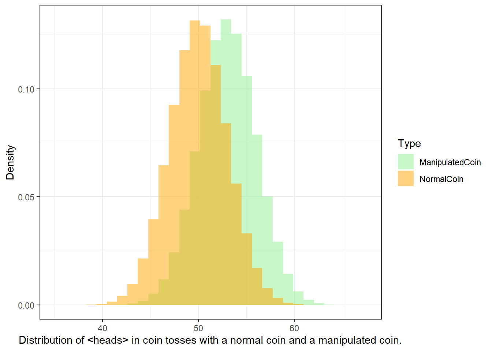
So before we actually start with the coin tossing, you operationalize your hypothesis:
H0: The author (I) is not cheating (heads shows just as often as tails).
H1: The author (I) is cheating (heads shows so often that the probability of the author not cheating is lower than 5 percent)
We now toss the coin and head shows twice. The question now is whther head showing twice is lower than 5 percent.
We toss the coin 3 times. Head shows twice. How likely is it that I do not cheat and head falls more than twice anyway? (In other words, what is the probability p that I win twice or more and not cheat?) If you set the significance level at .05, could you then accuse me of being a cheater?
As you can see in the fourth column, there are three options that lead to heads showing twice (rows 2, 3, and 4). If we add these up (0.125 + 0.125 + 0.125 = 0.375). Also, we need to add the case where head shows 3 times which is another .125 (0.375 + 0.125 = .5), then we find out that the probabilty of heads showing at least twice in three coin tosses is 50 percent and thus 10 times more than the 5-percent threshold that we set initially. Therefore, you cannot claim that I cheated.
| 0 Heads | 1 Time Head | 2 Times Heads | 3 Times Heads |
|---|---|---|---|
| 0.125 | 0.375 | 0.375 | 0.125 |
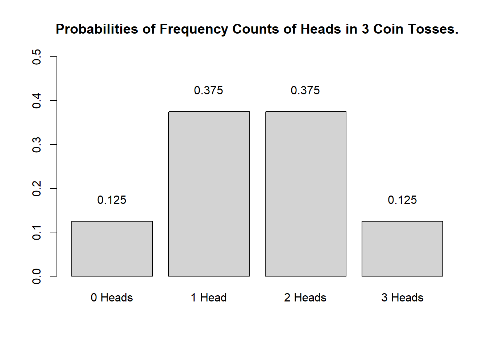
Calculating the probabilities for three coin tosses is still manageable manually but is there an easier way to calculate probabilities? A handier way is have a computer calculate probabilities and the code below shows how to do that in R - a very powerful and flexible programming environment that has been designed for quantitative analysis (but R can, in fact, do much more - this website, for instance, is programmed in R).
# probabilities of 0, 1, 2 and 3 times head in 3 coin tosses
dbinom(0:3, 3, 0.5)## [1] 0.125 0.375 0.375 0.125# probabilities of 2 or 3 times head in 3 coin tosses
sum(dbinom(2:3, 3, 0.5))## [1] 0.5# probability of 100 times head in 100 coin tosses
dbinom(100, 100, 0.5)## [1] 7.888609e-31# probabily of 58 to a 100 times head in 100 coin tosses
sum(dbinom(58:100, 100, 0.5))## [1] 0.06660531# probability of 59 to a 100 times head in 100 coin tosses
sum(dbinom(59:100, 100, 0.5))## [1] 0.04431304# at which point does the probability of getting head
# dip below 5 percent in 100 coin tosses?
qbinom(0.05, 100, 0.5, lower.tail=FALSE)## [1] 58In our example, we dealing with a directed hypothesis and not with an undirected hypothesis because we claimed in our H1 that I was cheating and would get more heads than would be expected by chance. For this reason, the test we use is one-tailed. When dealing with undirected hypotheses, you simply claim that the outcome is either higher or lower - in other words the test is two-tailed as you do not know in which direction the effect will manifest itself.
To understand this a more thoroughly, we will consider tossing a coin not merely 3 but 100 times. The Figure below shows the probabilities for the number of heads showing when we toss a coin 100 from 0 occurrences to 100 occurrences.
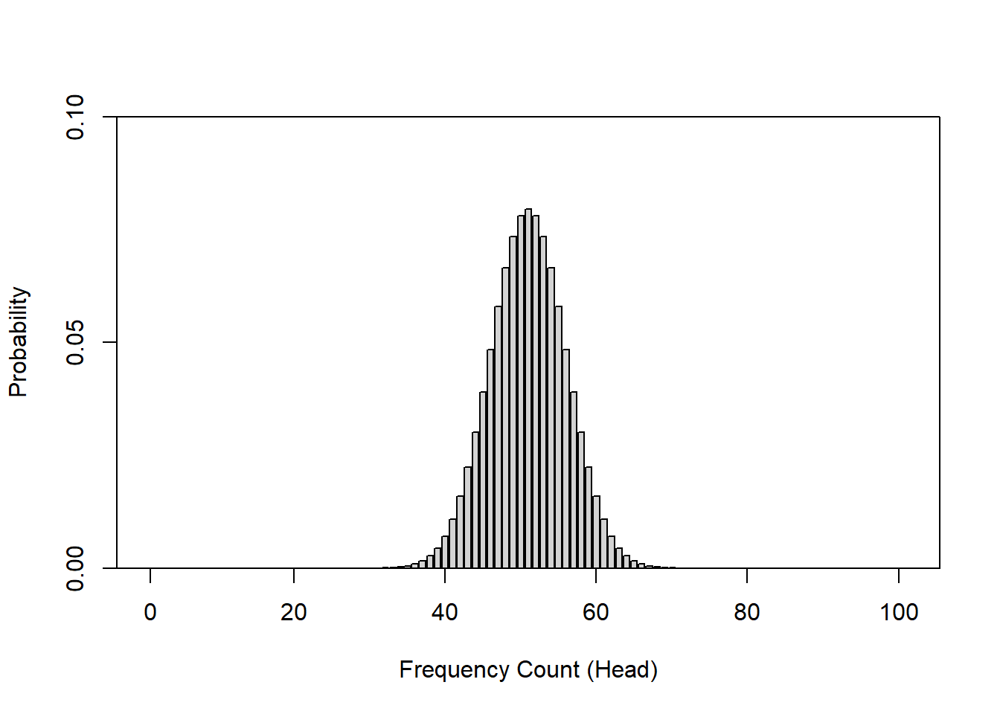
The next Figure shows at which number of heads the cumulative probabilities dip below 5 percent for two-tailed hypotheses. According to the graph, if head shows up to 40 or more often than 60 times, the cumulative probability dips below 5 percent. Applied to our initial bet, you could thus claim that I cheated if head shows less than 41 times or more than 60 times (if out hypothesis were two-tailed - which it is not).
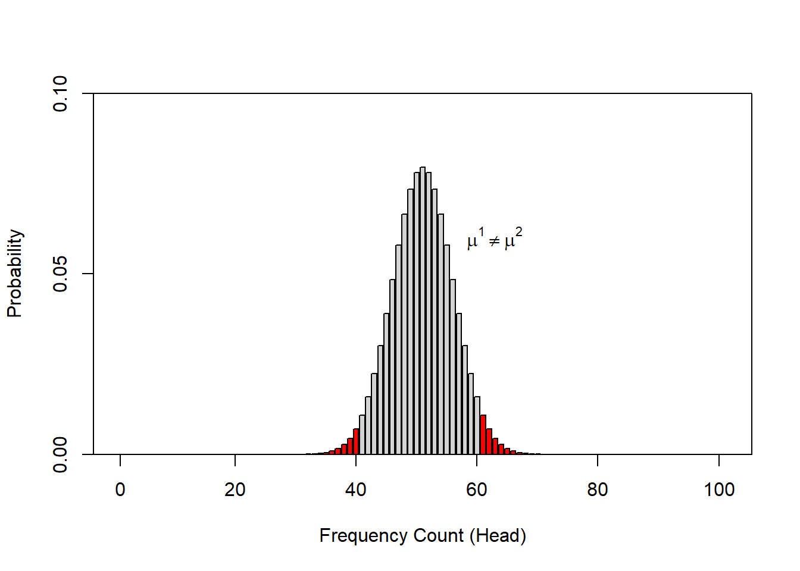
The Figure below shows at which point the probability of heads showing dips below 5 percent for one-tailed hypotheses. Thus, according to the figure below, if we toss a coin 100 times and head shows 59 or more often, then you are justified in claiming that I cheated.
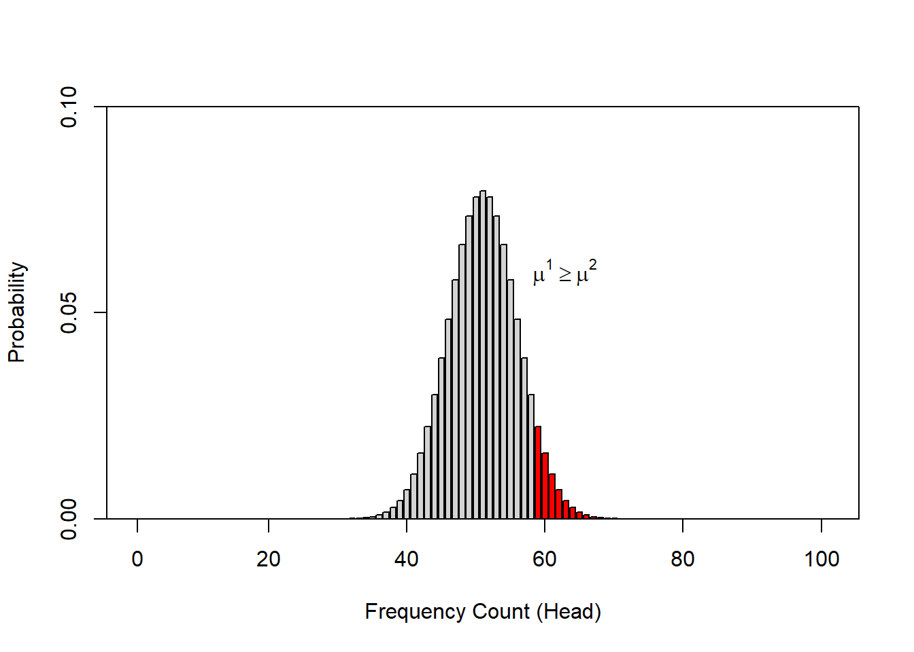
When comparing the two figures above, it is notable that the number at which you can claim I cheated differs according to whether the H1 as one- or two-tailed. When formulating a one-tailed hypothesis, then the number is lower compared with the the number at which you can reject the H0 if your H1 is two-tailed. This is actually the reason for why it is preferable to formulate more precise, one-tailed hypotheses (because then, it is easier for the data to be sufficient to reject the H0).
6.3 The Normal Distribution
It is important to note here that the above described calculation of probabilities does not work for numeric variables that are interval-scaled. The reason for this is that it is not possible to calculate the probabilities for all possible outcomes of a reaction time experiment. In such cases, we rely on distribution (typically the normal distribution) in order to determine how likely or probable a certain outcome is. When relying on distributions, we determine whether a certain values falls within or outside of the area of a distribution that accounts for 5 percent of the entire area of the distribution - if it falls within the area that accounts for less than 5 percent of the total area, then the result is called statistically significant (see the normal distribution below).
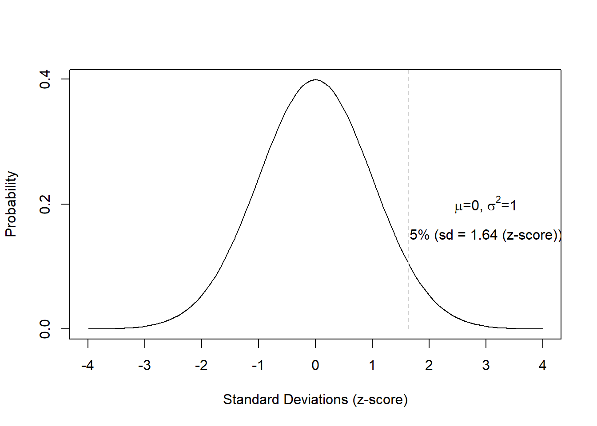
The normal distribution (or Gaussian curve or Gaussian distribution) shown in the Figure above has certain characteristics that can be derived mathematically. Some of these characteristics relate to the area of certain sections of that distribution and the mean, median, and mode are identical (and are at the value of the highest point of the normal distribution).
In addition, 50 percent of the total area under the curve are to left and 50 percent of the right of the mean value. Furthermore, 68 percent of the area are within -1 and +1 standard deviations from the mean; 95 percent of the area lie between -2 and +2 standard deviations from the mean; 99.7 percent of the area lie between -3 and +3 standard deviations from the mean.
In addition, 5 percent of the area lie outside -1.96 and +1.96 standard deviations from the mean (if these areas are combined) (see the Figure below).
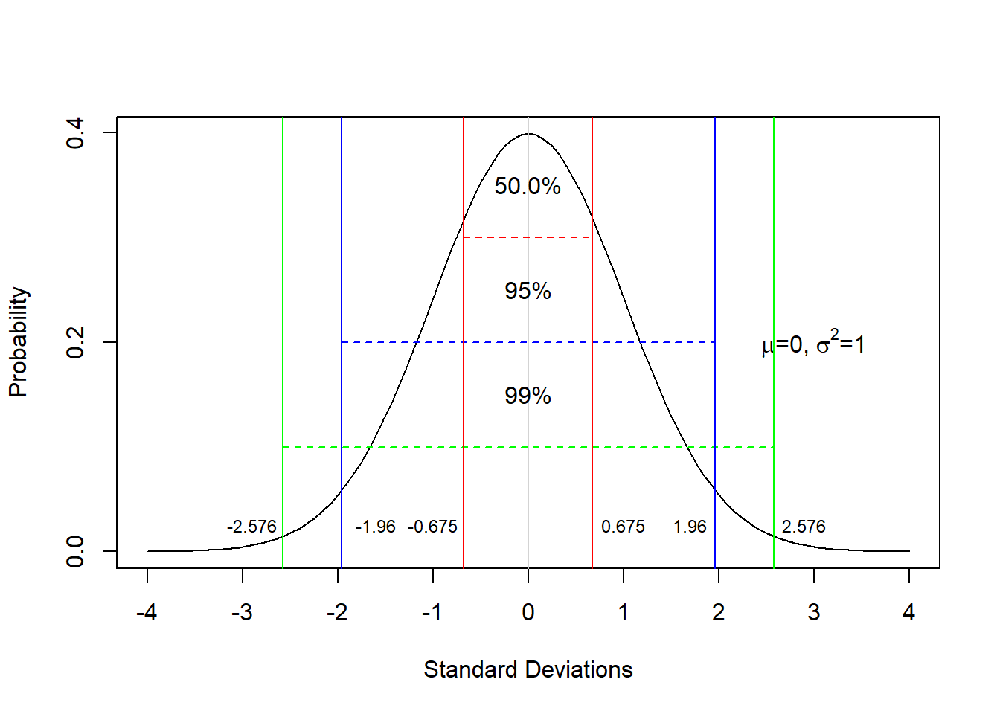
Finally, 5 percent of the area lies beyond +1.68 standard devaitions from the mean (see the Figure below).
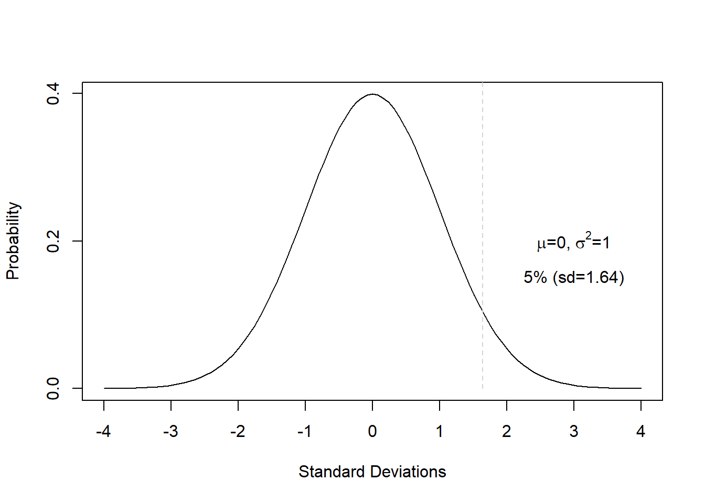
These properties are extremely useful when determining the likelihood of values or outcomes that reflect certain interval-scaled variables.
Exercises
Create a table with the possible outcomes and probabilities of 4 coin tosses (you can consider the table showing the outcomes of three coin tossse above as a guideline).
How likely is it for heads to show exactly 3 times when tossing a coin 7 times?
How likely is it for heads to show exactly 2 or 5 times when tossing a coin 7 times?
How likely is it for heads to show 5 or more times when tossing a coin 7 times?
How likely is it for heads to show between 3 and 6 times when tossing a coin 7 times?
6.4 The Binomial Distribution
A distribution which is very similar to the normal distribution is the “binomial distribution”. The binomial distribution displays the probability of binary outcomes. So, in fact, the distribution of the coin flips above represents a binomial distribution. However, the binomial distribution cane be (as above in case of the cpin flips) but does not have to be symmetric (like the normal distribution).
To illustrate this, let us consider the following example: we are interested in how many people use discourse like in Australian English. We have analyzed a corpus, for instance the Australian component of the International Corpus of English and found that 10 percent of all speakers have used discourse like. In this example, the corpus encompasses 100 speakers (actually the the spoken section of the Australian component of the ICE represents moe than 100 speakers but it will make things easier for us in this example).
Now, given the result of our corpus analysis, we would like to know what percentage of speakers of Australian English use discourse like with a confidence of 95 percent. Given the corpus study results, we can plot the expected binomial distribution of discourse like users in Australian English.

The barplot above shows the probability distribution of discourse like users in Australian English. The first thing we notice is that the binomial distribution is not symmetric as it is slightly left-skewed. If we would increase the number of draws or speakers in our example, the distribution would, however, approximate the normal distribution very quickly. because the binomial distribution approximates the normal distribution for large N or if the probability is close to .5, it is common practice to use the normal distribution instead of the binomial distribution.
The barplot below also shows the probability distribution of discourse like users in Australian English but, in addition, it is color-coded: bars within the 95 percent confidence interval are “lightgray”, the bars in red are outside the 95 percent confidence interval. In other words, if we repeated the corpus analysis, for instance 1000 times, on corpora which represent speakers from the same population, then 95 percent of samples would have between 1 and 8 discourse like users.

In addition to the normal distribution and the binomial distribution, there are many other distributions which underlay common procedures in quantitative analyses. For instance, the t- and the F-distribution or the Chi-distribution. However, we will not deal with these distributions here.
7 Alpha and Beta Errors
One practice that unfortunately still very frequent, which is a very serious problem in data analysis, and which has led to the development of multivariate techniques is the increase of the error rates in multiple or repeated testing.
We have stated before that we usually assume a significance level of 5%. However, this also means that, on average, every 20th test result, which has a significance value of .05, is misinterpreted because, on average, one out of 20 results shown to be significant is actually not caused by a real effect but the result of normally distributed probabilities and a fixed significance level. If we perform several tests, the probability that we obtain a significant result for something which is, in fact, not significant adds up and increases exponentially. Indeed, even with only four tests the likelihood of a significant result in the test - although there is in actually no difference - is 18.5%! This increase in error rates can by easily calculated with formula below.
\[\begin{equation} 1 - .95^{n} = error \label{eq:inflatederrors} \end{equation}\]
\[\begin{equation} 1 - .95^{4} = 1 - 0.814 = 0.185 \label{eq:inflatederrorsbsp} \end{equation}\]
We will return to this later, but first we will look at different types of errors.
One differentiates between \(\alpha\)- (or alpha-) and \(\beta\) (or beta-) errors. \(\alpha\) errors represent a situation in which a test reports a significant effect although there is no effect in empirical reality. \(\beta\) errors reflect a situation in which a test does not report a significant effect although there is one in empirical reality (see Table below).
| Correlation | No Correlation | |
|---|---|---|
| Correlation | beta-error | |
| No Correlation | alpha-error |
Regarding the difference between \(\alpha\) and \(\beta\) errors, it can be said that \(\beta\) errors are generally to be preferred, as they merely state that, based on the data, it can not be assumed that X or Y is the case, while \(\alpha\) errors do not false statements become part of recognized knowledge. As a rule of thumb, more conservative and conservative behavior is less problematic in terms of science theory, and thus \(\alpha\) rather than \(\beta\) errors should be avoided.
Now that we have clarified what types of errors exist and that errors accumulate, we will examine a related concept: Independence.
8 Independence
If errors would always add up, then statistics would not be possible, since every new test would have to take all previous tests into account. This is obviously absurd and cannot be the case. The question now arises about what determines, if errors accumulate or not? The answer is called independence.
If tests are independent of one another, then their errors do not accumulate. However, if they are related to each other, then the errors add up. A word of caution is in order here as the concept of independence in statistics has a different meaning from everyday use: in statistics, independence means the independence of hypotheses. In the case of specifications of more general hypotheses, the specified hypotheses are not independent of the general hypothesis and are not independent of the other specified hypotheses. In other words, if we test several specific hypotheses in a more generalized hypothesis, then the hypotheses are not strictly independent and cannot be treated that way. If we formulate two hypotheses that are not conceptually linked or one hypothesis is not derived from the other, then these hypotheses are independent.
We encounter a related phenomenon when dealing with extensions of \(\chi\)2 test: the reason why we could not calculate the ordinary Pearson’s \(\chi\)2 test when focusing on subtables derived from larger tables is that the data of represented in the subtable is not independent from the other observations summarized in the larger table.
When we performed the ordinary Pearson’s \(\chi\)2 test we tested whether emotion metaphors are realized differently across registers. The subsequent test built on the results of that first test and zoomed in on a specified hypothesis (namely that two specific types of metaphors would differ in two specific registers). Therefore, we are dealing with two hypotheses, the second hypothesis being a specification of the first hypothesis. This means that the hypotheses were related and not independent. Consequently, the errors would have added up if we had not considered that not only the part table was extracted from the data, but we wanted to test a part table of a larger table.
A second and perhaps more important feature of independence is that independent variables must not be correlated. If they are, however, this is called multicollinearity (more on this when we look at multiple regression).
9 Corrections
Now that we know about error accumilation and issues of independence, how can we test multiple hypotheses (simultaneously)? One option is to use multivariate methods, as we will see in the section on “Advanced Statistics”. Another option is to incorporate corrections to ensure that the \(\alpha\)-level remains at 5% even with repeated or multiple testing.
The best known and probably the most widely used correction is the Bonferroni correction, where the \(\alpha\)-level is divided by the number of tests. For example, if we perform 4 tests, then the \(\alpha\)-level is lowered to .05 / 4 = .0125 so that the \(\alpha\)-level of the four tests returns to the usual 5% level. The disadvantage of this correction is that it is more conservative and therefore leads to a relatively high \(\beta\)-error rate.
Other common corrections are the Holm and the Benjamini-Hochberg corrections. However, we will not discuss them here. The interested reader is referred to Field, Miles, and Field (2012), pp. 429-430.
10 What To Do With Non-Normal Data
We have now a basic understanding of the normal distribution and its characterists. The normal distribution is relevant in statistics because tests build on assumptions that involve the distributions of variables or residuals. If the data is not distributed normally but the test you want to use assumes and therefore requires normality, then there is a problem. In this section, we will have a look at ways to “nromalize” data. In this context, normalization refers to transformations of data that cause the data to exhibit different distributional characteristsics (e.g. being more normal).
Let us have a look at an example to clarify what is meant here and what can be done when dealing with non-normal data. In a first step, we will create some data and test whether it is “nromal” or not. The data represents the frequency of discourse particles differs across two corpora that represent the speech of the same fifty speakers (see the Figure below).
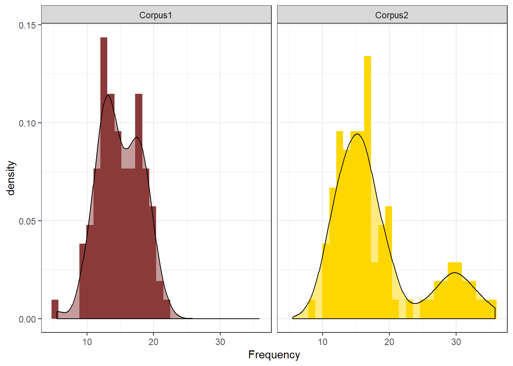
In a first step, we test weather the frequencies of the discourse particles are distributed normally in the two corpora. The test we use here is called the Shapiro-Wilk test and it determines the likelihood with which a given sample is drawn from normally distributed population. If the Shapiro-Wilk test reports a significant result, then this means that the sample is significantly non-normal and unlikely to be drawn from normally distributed population.
##
## Shapiro-Wilk normality test
##
## data: c1
## W = 0.98781, p-value = 0.4939##
## Shapiro-Wilk normality test
##
## data: c2
## W = 0.85574, p-value = 1.944e-08According to the Shapiro-Wilk test, the distribution in Corpus 1 is normal while the distribution in Corpus 2 is non-normal. It important to mention here that the Shapiro-Wilk test is inexact for small samples (N < 60) but to rigorous for large samples (N > 200).
One issue that we face now that we have confirmed that the distribution in Corpus 2 is non-normal relates to the description of the data. If data are non-normal, then the usual descriptive statistics (mean, median, standard deviation) are not really appropriate because they either assume normality (mean and standard deviation) or they are unfit to report non-normal structure). Therefore, when dealing with non-normal data, it is common to use alternative descriptive statistics.
## Min. 1st Qu. Median Mean 3rd Qu. Max.
## 8.537 13.263 16.492 18.410 19.773 35.819## 25% 50% 75%
## 13.26304 16.49159 19.77335## [1] 8.537011 35.818977## [1] 3.282116## [1] 6.510316## id text.id subfile spk.ref zone date sex age reside
## 1 1 S1A-001 1 A northern ireland 1990-1994 male 34-41 belfast
## 2 2 S1A-001 1 B northern ireland 1990-1994 female 34-41 belfast
## 3 4 S1A-002 1 A northern ireland 2002-2005 female 26-33 belfast
## 4 5 S1A-002 1 B northern ireland 2002-2005 female 19-25 belfast
## 5 6 S1A-002 1 C northern ireland 2002-2005 male 50+ belfast
## 6 7 S1A-002 1 D northern ireland 2002-2005 female 50+ belfast
## relig word.count
## 1 protestant 765
## 2 protestant 1298
## 3 catholic 391
## 4 catholic 47
## 5 catholic 200
## 6 catholic 464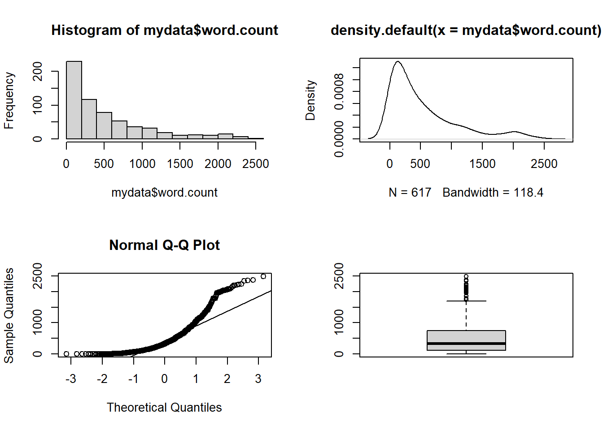
One way to deal with non-normal data is to transform the data. Here are selected rules of thumb for data transformations that are particularly useful when dealing with language data.
- If the data is moderately positively skewed, the best option is to take the square root of the dependent variable: sqrt(DepVar).
- If the data is moderately negatively skewed, the best option is to square the dependent variable: (DepVar)^2.
- If the data is J shaped, the best option is to transform the dependent variable in the following way: 1/(DepVar + 1).
##
## Shapiro-Wilk normality test
##
## data: mydata$word.count
## W = 0.82322, p-value < 2.2e-16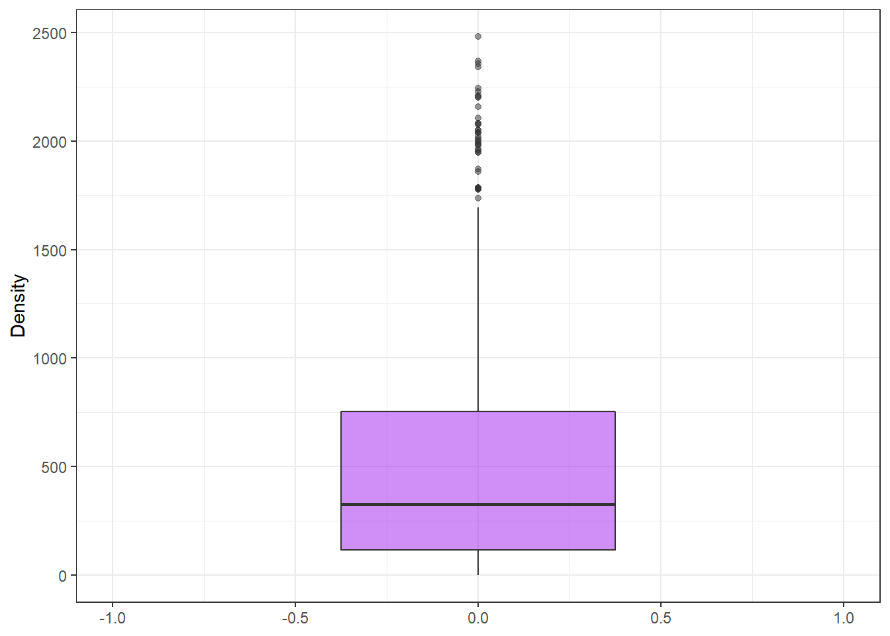
## [1] 617## [1] 573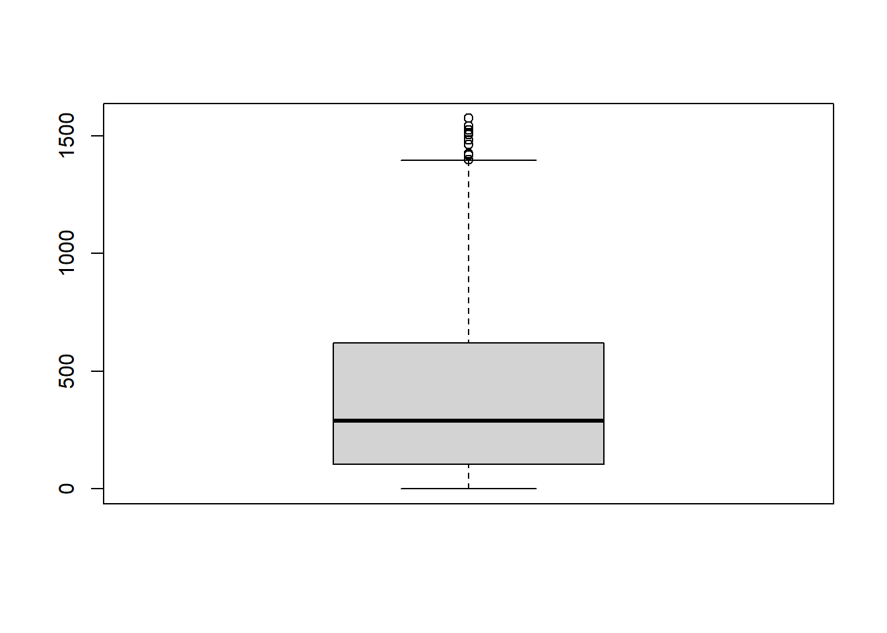
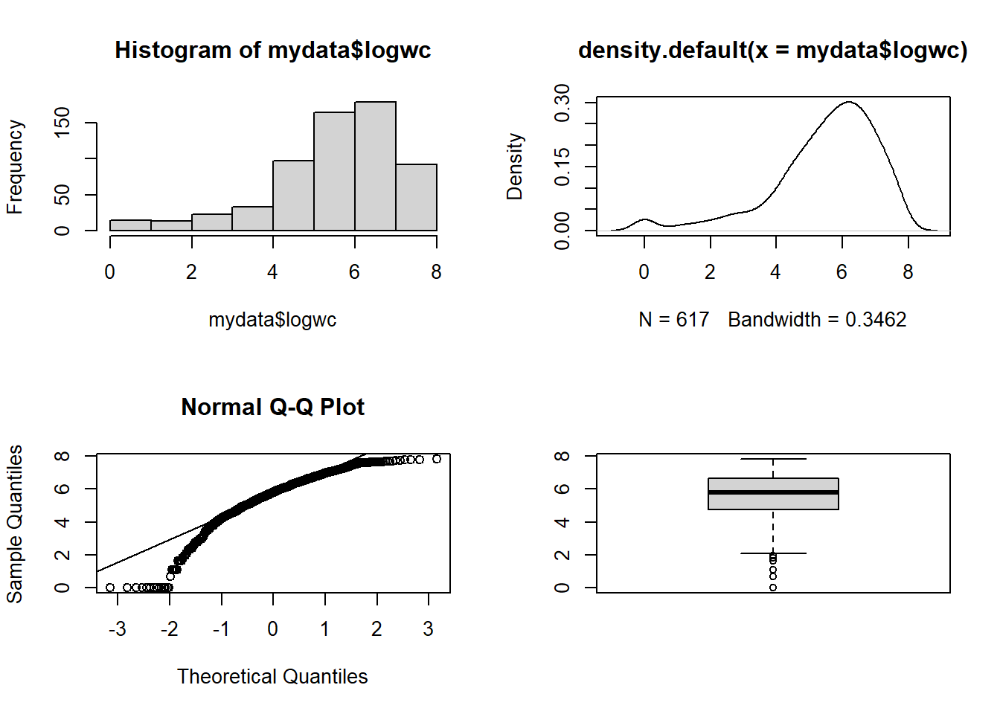
##
## Shapiro-Wilk normality test
##
## data: mydata$logwc
## W = 0.90171, p-value < 2.2e-16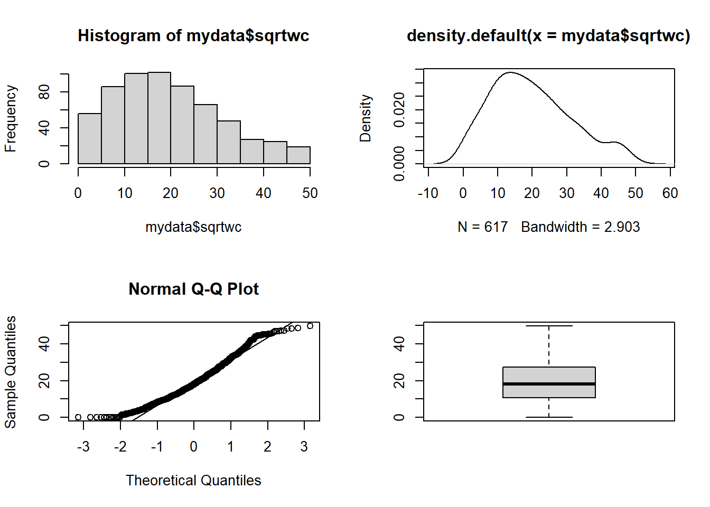
##
## Shapiro-Wilk normality test
##
## data: mydata$sqrtwc
## W = 0.96771, p-value = 2.075e-1011 Bayes Theorem
Bayes theorem is a different approach to statistics that does not rely on the normal distribution but on conditional probabilities. Conditional probability means the probability of something (X) given soemthing else (Y). Bayes Theorem is represented by the equation below.
\[\begin{equation} $P(A|B) = \frac{P(B|A) P(A)}{P(B)}$ \end{equation}\]
In prose, the equation reads something like this: The chance of something (for instance, the chance of a result of a test being correct) being the case is the the chance of a true positive results out of all positive results (true and wrong).
To exemplify what that really and and also how Bayes theorem works, we will use a simple example. The example involves the probability of being diagnosed with cancer given the probability of the test being wrong.
Imagine the probability of having cancer is 1 percent. Among 1,000 people, 10 would actually have cancer. However, the test that is used to determine if a person has cancer has an error rate of 20 percent. This means that the test is wrong is 20 percent of cases. If 1000 people took the test, this means that 10 out of these 1000 people would be expected to have cancer but the test would inidcate that 200 people had cancer.
It is notable that Bayes theorem takes into account that there is a difference between an actual fact (a person having cancer) and the result of a test (the test reports that a person has cancer). This means that in application of Bayes therem, we consider the chance of false results.
| Reality: Cancer | Reality: NoCancer | |
|---|---|---|
| Test: Cancer | Correct | False positive |
| Test: NoCancer | False negative | Correct |
Now, applied to our example, this would mean the following.
| Reality: Cancer | Reality: NoCancer | |
|---|---|---|
| Test: Cancer | 80% | 9.6% |
| Test: NoCancer | 20% | 90.4% |
The table above can be read as follows:
- 1% of people have cancer
- If the patient actually has cancer, the patient is in the first column. The test will detect cancer with a 80% accuracy, i.e. the test reports that the patient has cancer in 80% of cases. But in 20% of cases, the test will report “no cancer”" although the patient does, in fact, have cancer.
- If the patient does not have cancer, the patient is in the second column. There’s a 9.6% chance that the test will report that you have cancer, and a 90.6% chance that the test will report a negative result.
Imagine now, that the test reports that a patient has cancer. What is probability that the patient actually has cancer?
Because the test reports cancer, the patient is in the top row of the table. However, it could be a true positive or a false positive. The chances of a true positive (the patient has in deed cancer and the tests reports it) are = 1% 80% = .008% (0.8%). The chances of a false positive (the patient does not have cancer but the test reports that the patient has cancer) are = 99% 9.6% = 0.09504 (9.5%).
Citation & Session Info
Schweinberger, Martin. 2020. Basics of Quantitative Reasoning. Brisbane: The University of Queensland. url: https://slcladal.github.io/basicquant.html.
sessionInfo()## R version 4.0.2 (2020-06-22)
## Platform: x86_64-w64-mingw32/x64 (64-bit)
## Running under: Windows 10 x64 (build 18362)
##
## Matrix products: default
##
## locale:
## [1] LC_COLLATE=German_Germany.1252 LC_CTYPE=German_Germany.1252
## [3] LC_MONETARY=German_Germany.1252 LC_NUMERIC=C
## [5] LC_TIME=German_Germany.1252
##
## attached base packages:
## [1] stats graphics grDevices utils datasets methods base
##
## other attached packages:
## [1] kableExtra_1.2.1 ggplot2_3.3.2 knitr_1.30
##
## loaded via a namespace (and not attached):
## [1] pillar_1.4.6 compiler_4.0.2 highr_0.8 tools_4.0.2
## [5] digest_0.6.25 viridisLite_0.3.0 evaluate_0.14 lifecycle_0.2.0
## [9] tibble_3.0.3 gtable_0.3.0 pkgconfig_2.0.3 rlang_0.4.7
## [13] rstudioapi_0.11 yaml_2.2.1 xfun_0.16 withr_2.3.0
## [17] stringr_1.4.0 dplyr_1.0.2 httr_1.4.2 xml2_1.3.2
## [21] generics_0.0.2 vctrs_0.3.4 webshot_0.5.2 grid_4.0.2
## [25] tidyselect_1.1.0 glue_1.4.2 R6_2.4.1 rmarkdown_2.3
## [29] purrr_0.3.4 farver_2.0.3 magrittr_1.5 scales_1.1.1
## [33] ellipsis_0.3.1 htmltools_0.5.0 rvest_0.3.6 colorspace_1.4-1
## [37] labeling_0.3 stringi_1.5.3 munsell_0.5.0 crayon_1.3.4References
Field, Andy, Jeremy Miles, and Zoe Field. 2012. Discovering Statistics Using R. Sage.
Gries, Stefan Th. 2009. Statistics for Linguistics Using R: A Practical Introduction. Berlin & New York: Mouton de Gruyter.